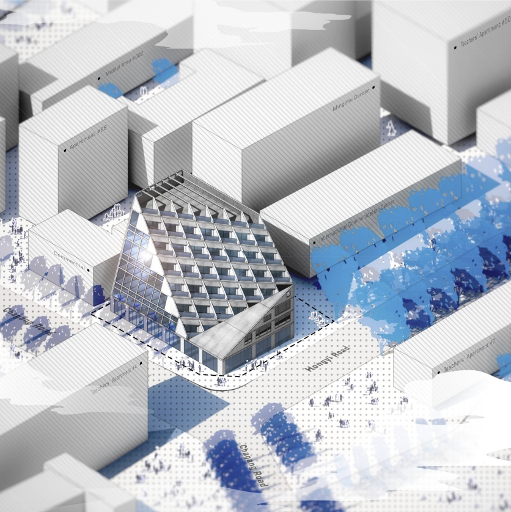

Mission
Yilin is dedicated to harnessing the power of computational design and technology to redefine the boundaries of architecture and urban design. He envisions a future where design and technology converge to create more efficient, sustainable, and human-centric urban environments. His mission is to contribute to the evolution of architectural practices, ensuring they are adaptable, resilient, and in harmony with the natural world. Through his work, Yilin aims to inspire a new generation of designs that are not only aesthetically pleasing but also socially responsible and environmentally friendly.
nyc_Transportation_Equity

Outlined Trees
Emo_Plant

Hybrid of "Contrast"


Bio
Yilin is a multifaceted professional whose expertise spans across architecture, computational design, urban design, and web development. With a rich foundation in both theoretical and practical aspects of architecture, Yilin brings a unique blend of creativity, technical skill, and analytical thinking to the table. His work in various architectural and urban design projects showcase his ability to integrate technology with traditional design principles. Yilin's proficiency in advanced design and visualization tools, coupled with his passion for sustainable and innovative solutions, positions him as a dynamic force in the field of computational design and architecture.
City_Objective_Perception
Education
Yilin has dual Bachelor of Architecture degrees from Wuhan University and University of Dundee, where he honed his foundational skills and theoretical knowledge. He also has a Master of Science in Computational Design Practice (MS-CDP) degree in GSAPP at Columbia University. This advanced study equips him with cutting-edge skills in computational design, further solidifying his role as an innovator in the architectural field.